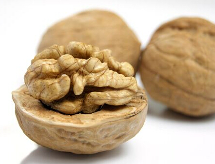

核桃，在国际市场上与扁桃、腰果、榛子一起，并列为世界四大干果。中国和美国的产量占了。核桃在国外，人称“大力士食品”、“营养丰富的坚果”、“益智果”；在国内享有“万岁子”、“长寿果”、“养人之宝”的美称。
其卓著的健脑效果和丰富的营养价值，已经为越来越多的人所推崇。核桃属于胡桃科落叶乔木干果。我国栽培核桃历史悠久，公元前3世纪张华著的《博物志》一书中，就有“张骞使西域，得还胡桃种”的记载。核桃的故乡是亚洲西部的伊朗，汉张骞出使西域时传入我国。现今核桃分布我国各地。
药用价值核桃的药用价值很高，中医应用广泛。祖国医学认为核桃性温、味甘、无毒，有健胃、补血、润肺、养神等功效。《神农本草经》将核桃列为久服轻身益气、延年益寿的上品。唐代孟诜著《食疗本草》中记述，吃核桃仁可以开胃，通润血脉，使骨肉细腻。宋代刘翰等著《开宝本草》中记述，核桃仁“食之令肥健，润肌，黑须发，多食利小水，去五痔。”明代李时珍著《本草纲目》记述，核桃仁有“补气养血，润燥化痰，益命门，处三焦，温肺润肠，治虚寒喘咳，腰脚重疼，心腹疝痛，血痢肠风”等功效。
现代医学研究认为，核桃中的磷脂，对脑神经有良好保健作用。核桃油含有不饱和脂肪酸，有防治动脉硬化的功效。核桃仁中含有锌、锰、铬等人体不可缺少的微量元素。人体在衰老过程中锌、锰含量日渐降低，铬有促进
美国饮食协会建议人们，每周最好吃两三次核桃，尤其中老年人和绝经期妇女，因为核桃中所含的精氨酸、油酸、抗氧化物质等对保护心血管，预防冠心病、中风、老年痴呆等是颇有裨益的。一次不要吃得太多，否则会影响消化。有的人喜欢将核桃仁表面的褐色薄皮剥掉，这样会损失一部分营养，所以，不要剥掉这层皮。
现代医学研究认为，核桃中的磷脂，对脑神经有良好保健作用。核桃油含有不饱和脂肪酸，有防治动脉硬化的功效。核桃仁中含有锌、锰、铬等人体不可缺少的微量元素。人体在衰老过程中锌、锰含量日渐降低，铬有促进葡萄糖利用、胆固醇代谢和保护心血管的功能。核桃仁的镇咳平喘作用也十分明显，冬季，对慢性气管炎和哮喘病患者疗效极佳。可见经常食用核桃，既能健身体，又能抗衰老。有些人往往吃补药，其实每天早晚各吃几枚核桃，实在大有裨益，往往比吃补药还好。
核桃是食疗佳品。无论是配药用，还是单独生吃、水煮、作糖蘸、烧菜，都有补血养气、补肾填精、止咳平喘、润燥通便等良好功效。核桃的食法很多，将核桃加适量盐水煮，喝水吃渣可治肾虚腰痛、遗精、阳痿、健忘、耳鸣、尿频等症。核桃与薏仁、栗子等同煮作粥吃，能治尿频、遗精、大便溏泻、五更泻等病症。核桃与芝麻、莲子同做糖蘸，能补心健脑，还能治盗汗。生吃核桃与
可将核桃仁加冰糖捣成“核桃泥”，密藏在瓷缸内，每次取两匙，用开水冲和，冲时盅中有一层白色液体浮起，这就是“核桃奶”，腴美可口。
若久吃以核桃仁磨粉煮成的“核桃粥”，能营养肌肤，使人白嫩，特别是老年人皮肤衰老更宜常吃。
核桃仁中所含维生素e，可使细胞免受自由基的氧化损害，是医学界公认的抗衰老物质，所以核桃有“万岁子”、“长寿果”之称。
核桃具有多种不饱和与单一非饱和脂肪酸，能降低胆固醇含量。因此吃核核桃对人的心脏有一定的好处。
经常食用核桃仁对肾虚引起的失眠有医治作用。服法为用核桃仁5个，白糖30克，捣烂如泥，放入锅里加黄酒50毫升，小火煎30分钟，每日1剂，分两次服。
核桃生食营养损失最少，在收获季节不经干燥取得的鲜核桃仁更是美味。目前，吃鲜核桃仁在发达国家比较普遍。有关科技开发中心正在攻克鲜核
桃仁的加工保鲜技术，相信在不久的将来，全国的消费者就能随时随地吃到营养美味的鲜核桃仁了。关于核桃仁的食用量，一般认为每天吃5～6个核桃，约20～30克核桃仁为宜；吃得过多，会生痰、恶心。此外，阴虚火旺者、大便溏泄者、吐血者、出鼻血者应少食或禁食核桃仁。
科学家们发现，每100克核桃肉中含有20.97个单位的抗氧化物质，它比
科学家们认为，人吸收了核桃的抗氧化物质，可使肌体免受很多疾病的侵害。迄今为止，人们已知道经常吃核桃可以减少血液中胆固醇的含量，并减少患心血管疾病的可能性。
巴塞罗那教学医院饮食与营养部主任埃米利奥·罗斯说，从这种意义上说，每日往饮食中加入少量核桃粉，可以使血液中ldl(坏胆固醇)的含量减少15%，因为核桃含有ω3和ω6脂肪酸。